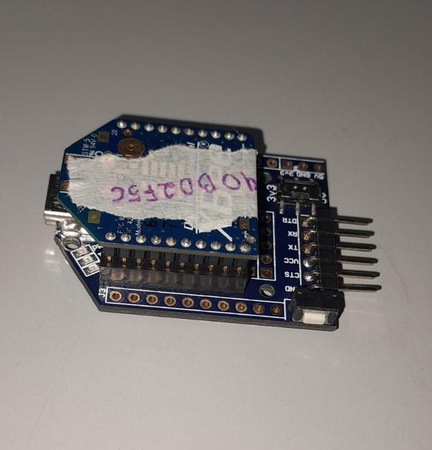

O QUE É O ZIGBEE?

O ZigBee é um protocolo de comunicação sem fios destinado a aparelhos IoT, com foco em dispositivos de baixa potência. Esses, por sua vez, são equipamentos que possuem uma demanda energética limitada, com autonomia que pode chegar a anos com uma única bateria. A tecnologia foi pensada para interligar essas unidades de dispositivos inteligentes, criando uma espécie de rede ZigBee, independente do Wi-Fi.
A promessa, portanto, é de criar uma comunicação autônoma entre esses produtos, o que pode significar maior velocidade e segurança para a casa conectada. Entre as principais aplicações da tecnologia estão: hubs domésticos, iluminação inteligente, controle de temperatura, controle de segurança e coleta de dados.
Proposta inicial e testes
A proposta inicial do projeto era desenvolver um sistema de irrigação automática utilizando o protocolo ZIGBEE como meio de comunicação, porém como não tinha experiência alguma com o equipamento, optei por iniciar o projeto com algo mais simples, visando aprender a configurar os módulos Xbee’s com mais facilidade e responder questões como:
I. Qual a distância máxima entre os módulos, em área livre, para que mantenham uma conexão estável?
II. Qual a distância máxima entre os módulos, com obstáculos, para que mantenham uma conexão estável?
III. É possível criar uma rede com mais de dois módulos?
Com isso, o objetivo passou a ser, nesse primeiro momento, controlar o acionamento de leds por meio de botoeiras, utilizando como base as placas XB24-B e dois arduinos UNO. Iniciei o processo de configuração dos módulos usando a ferramenta de software XCTU, onde enfrentei problemas, alguns dos módulos que me foram disponibilizados para trabalhar não funcionavam, o que atrasou o progresso do projeto. No entanto, consegui aprender a configurá-los e por fim realizei os testes, os resultados estão a seguir:
Tabela 01 - Resultados dos testes com o XB24-B.
Tutorial de configuração no XCTU
1- Abra o XCTU
2- Click no botão “Discover radio modules connected to your machine”.
3- Em seguida clique em “next” e “finish”.
4- Por fim click em “Add selected devices”.
5- Clique no ícone do Xbee para configurá-lo.
6- Clique em update.

7- Selecione o modelo Xbee que deverá ser configurado, no caso do LabMaker os modelos que funcionam são os XB24-B.
8- Selecione a função desejada para o módulo (Coordenador ou Roteador).

9- Atenção - O módulo pode ser configurado no modo API e no modo AT, porém de acordo com minhas experiências o modo AT é a melhor opção.
Códigos
Código Botões: Código
Código Controle de Leds: Código